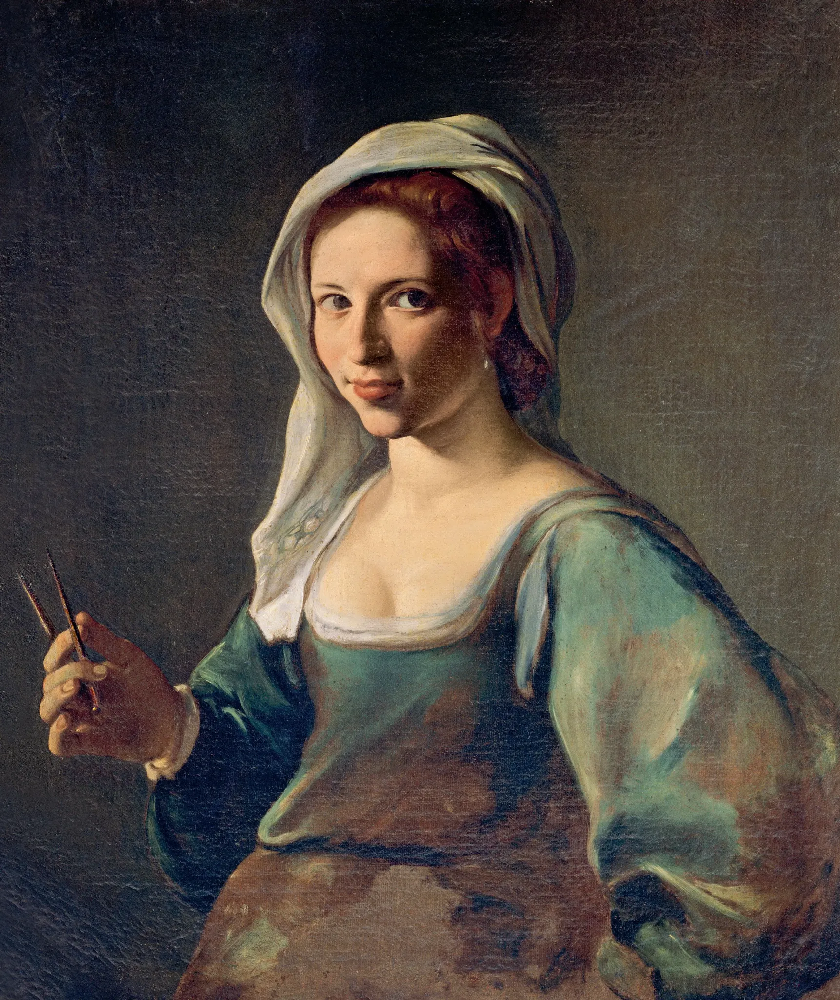
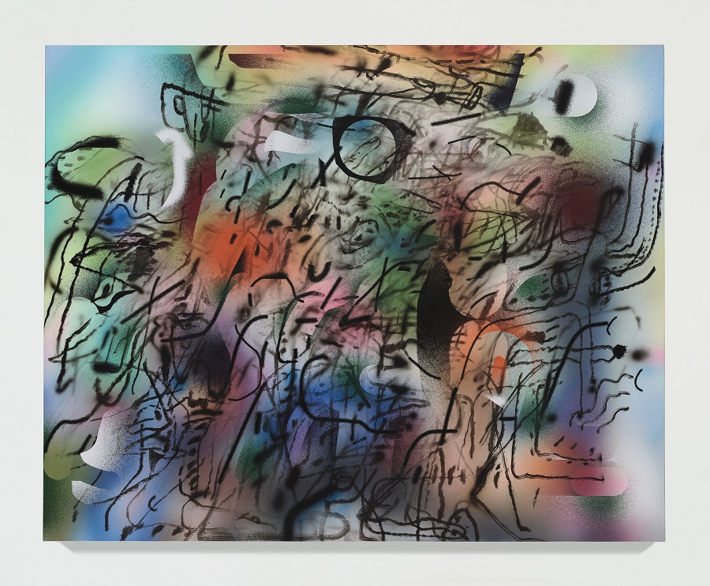
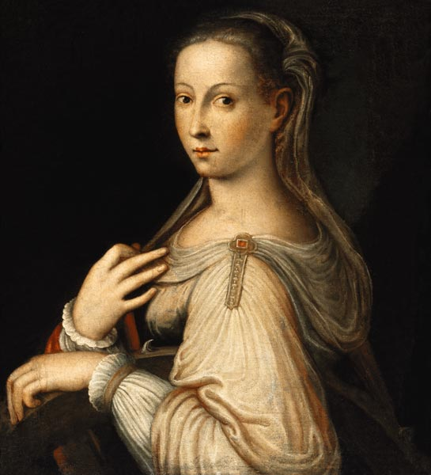
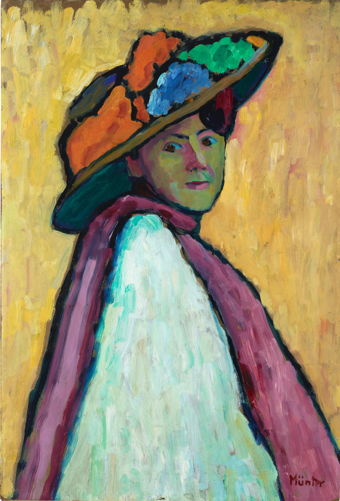

4 artiste
XV secolo
Dalle miniatrici e monache-artiste del Quattrocento alle prime personalità documentate.
Apri il secoloEducazione civica · classi terze
Un percorso tra artiste dal Quattrocento a oggi: biografie essenziali, opere, videopresentazioni degli studenti e collegamenti di approfondimento.
A tutte le donne che la storia dell’arte ha reso invisibili, perché le loro voci tornino a farsi sentire e le loro opere possano finalmente occupare il posto che meritano.
La nuova struttura è organizzata in pagine collegate: home, timeline, indice generale, pagine per secolo e una scheda per ogni artista.
4 artiste
Dalle miniatrici e monache-artiste del Quattrocento alle prime personalità documentate.
Apri il secolo
9 artiste
Il Rinascimento e il Manierismo: pittrici, incisore e naturaliste del Cinquecento.
Apri il secolo

4 artiste
Il Settecento tra ritratto, autorappresentazione e nuove accademie.
Apri il secolo
28 artiste
L’Ottocento e le grandi trasformazioni verso impressionismo, simbolismo e avanguardie.
Apri il secolo
31 artiste
Novecento e contemporanee: avanguardie, fotografia, performance, installazione e arte pubblica.
Apri il secoloOgni scheda artista può ospitare un’immagine principale, una breve presentazione, un link esterno e, quando disponibile, la videopresentazione degli alunni realizzata su Canva.